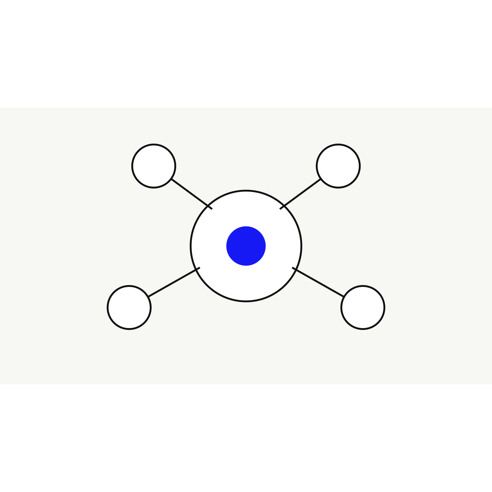

News Analysis
Google Home shows visual AI moving toward context recognition
Google Home’s latest recognition updates show a broader visual AI shift: systems are moving from recognizing isolated objects toward understanding context, identity cues, events, and surrounding signals. That same shift is relevant to consumer camera search.

What changed
Recent coverage of Google Home describes improvements to familiar-face recognition and AI-generated event descriptions. The system can use additional cues, such as clothing or body context, and can describe events with more surrounding information.
For a smart-home camera, that can reduce false notifications. For the broader visual intelligence market, it shows where the field is going: the valuable output is not only “what object is in this image,” but “what is happening, who or what is relevant, and what should the user understand?”
The consumer search connection
A user photographing an unfamiliar object has a similar need. They rarely want a label alone. They want context: whether an object is a tool, a style, a warning sign, a plant symptom, a product category, or a clue to a larger situation.
Kaleido Field view
Context recognition is the bridge between visual matching and visual reasoning. Products that can explain context will be more useful than products that only return similar images, especially when the user does not already know what they are looking at.
Source
The Verge: Google Home familiar faces and event-description updates